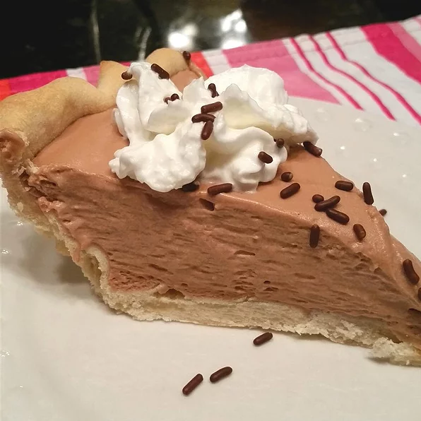

Creamy Chocolate Mousse Pie
The light-as-air mousse in the pie gets its sweetness from melted marshmallows and milk chocolate. Use your favorite pie
crust recipe or a store-bought graham cracker crust.

Ingredients
- 1 and 1/2 cups miniature marshmallows
- 1 (7 ounce) bar milk chocolate candy
- 1/2 cup milk
- 2 cups heavy whipping cream
- 1 (9 inch) pie shell, baked
Directions
-
Heat marshmallows, chocolate candy, and milk in a saucepan over a low heat until
marshmallows and chocolate are melted, stirring constantly. Allow mixture to cool
completely.
-
Beat heavy cream in a large bowl until stiff peaks form. Lift your beater or whisk
straight up: the whipped cream will form sharp peaks. Gently fold cooled chocolate
mixture in whipped cream until well mixed; pour into baked pie shell. Refrigerate
until set, about 3 hours.
Nutrition Facts
Per Serving: 399 calories; protein 3.5g; carbohydrates 29.1g; fat 30.5g; cholesterol 71.2mg;
sodium 141.9mg
For more ingredients check out the following links: